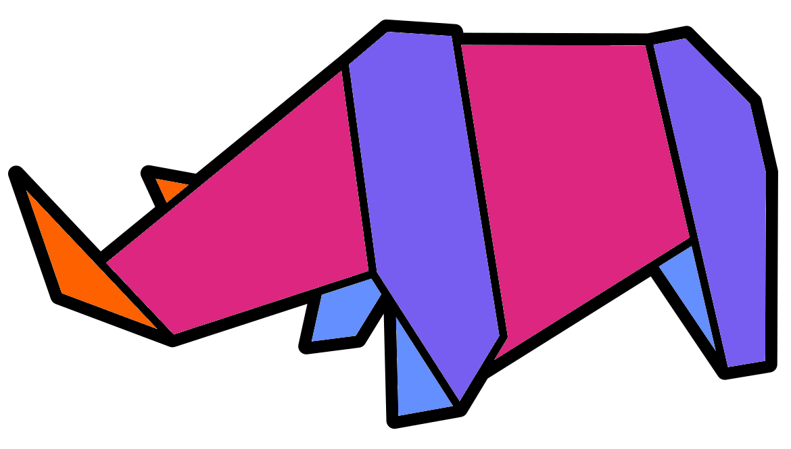

Chapter 11 Taxa plots
Now that we have our Genus relative abundance phyloseq we can create a bar chart.
11.1 Simple bar chart

To create, save, and view a simple genus bar chart we can use the following code.
#Simple bar chart
phylum_bar <- microbiome::plot_composition(phylum_pseq)
#Save ggplot object as png file
ggsave(filename = "./phylum_relabund_simple.png", plot = phylum_bar,
device = "png", dpi = 300, units = "mm", height = 200, width = 300)
#Display the plot in jupyter notebook
IRdisplay::display_png(file="./phylum_relabund_simple.png")This is a good start but we can improve it.
11.1.1 Editing the plot

Components can be added to ggplot2 objects to edit the plot.
They are added with the + symbol.
Go to the cell where you created your plot and add components so it looks like the below:
#Simple bar chart
phylum_bar <- microbiome::plot_composition(phylum_pseq) +
#Change/add the x and y labels
xlab("Sample") + ylab("Relative abundance") +
#Add a title to the plot
ggtitle("Phylum relative abundance bar chart")Now save and display the plot.
11.2 Taxa heatmap

Our bar chart looks quite nice but for displaying all taxa present it may be better to use a heatmap. Use the below code to produce and visualise a heatmap.
Tip: I encourage you to copy and paste your previous bar chart code to edit.
#Produce heatmap ggplot
phylum_heatmap <- microbiome::plot_composition(phylum_pseq, plot.type = "heatmap") +
xlab("Phylum") + ylab("Sample") +
ggtitle("Phylum relative abundance heatmap")
#Save ggplot object as png file
ggsave(filename = "./phylum_relabund_heatmap.png", plot = phylum_heatmap,
device = "png", dpi = 300, units = "mm", height = 200, width = 300)
#Display the plot in jupyter notebook
IRdisplay::display_png(file="./phylum_relabund_heatmap.png")With the heatmap it is much easier to tell what the relative abundances of different phyla are.
- What is the most abundant phyla across the samples?
11.3 Aggregate rare taxa

From our bar chart and our heatmap we can see that there are a few high abundance phyla (Actinobacteria, Bacteroidetes, Firmicutes, & Proteobacteria) and many low abundance phyla.
To make a better visualisation we will aggregate the rare phyla. This will give us less phyla to plot so we don't need to use so many colours.
To carry this out we will use the microbiome function aggregate_rare().
The function has three main options:
level =: Taxa level to aggregate table.detection =: Detection threshold (see below).prevalence =: Prevalence threshold (see below).
The function will aggregate taxa to our specified level. Whilst doing this it will aggregate the rare taxa of that level to one group called "Other". Rare taxa are specified via the detection and prevalence thresholds. Any taxa with an abundance >= to the detection threshold in a number of samples >= to the prevalence threshold will be kept. The taxa which don't reach these thresholds will be classified as rare and aggregated into "Other".
In the below example we are aggregating the rare taxa with our ASV relative abundance phyloseq object.
Any phyla with a relative abundance >= to 0.01 (detection) in at least 5% (5/100) of the samples will not be classified as rare.
More info on Prevalence & detection.
Note: The detection and prevalence thresholds can be given as numbers (1, 2, 1000 etc.), or percentage values (5/100, 50/100, etc.).
Aggregate the relative abundance table to phyla with the rare thresholds:
#Aggregate rare phyla
phylum_rareaggregate_pseq <- microbiome::aggregate_rare(
pseq_relabund, level = "Phylum",
detection = 0.01, prevalence = 5/100
)We will plot this as a new taxonomy bar chart with some additions:
#Plot
#Add otu.sort to sort phyla by abundance (highest to lowest)
phylum_bar <-
microbiome::plot_composition(phylum_rareaggregate_pseq,
otu.sort ="abundance") +
xlab("Sample") + ylab("Relative abundance") +
ggtitle("Phylum relative abundance bar chart") +
#Change colours of Phylum to that of the "Paired" palette from colour brewer
scale_fill_brewer("Phylum", palette = "Paired")
#Save ggplot object as png
ggsave(filename = "./phylum_relabund_rareaggregate.png", plot = phylum_bar,
device = "png", dpi = 300, units = "mm", height = 200, width = 300)
#Display plot
IRdisplay::display_png(file="./phylum_relabund_rareaggregate.png")
That is a very nice and clean bar chart. We can quite easily see that there are 7 main phyla (excluding other). Additionally, it seems that the biggest difference between samples is due to the media used.
11.4 Plot by media

One of the many great advantages of ggplot2 is that you can create plots tailored to your metadata.
As an example we will create another taxonomy bar chart but have one bar for each media site.
We'll use a very similar code as the above bar chart but add the microbiome::plot_composition option average_by =.
With this we will average the rare aggregated relative abundance values by the four different media.
#Plot by media
phylum_media_bar <-
microbiome::plot_composition(phylum_rareaggregate_pseq,
otu.sort ="abundance",
average_by = "media") +
xlab("Sample") + ylab("Relative abundance") +
ggtitle("Phylum relative abundance bar chart by media") +
scale_fill_brewer("Phylum", palette = "Paired")
#Save ggplot object as png
ggsave(filename = "./phylum_relabund_media_rareaggregate.png", plot = phylum_media_bar,
device = "png", dpi = 300, units = "mm", height = 200, width = 300)
#Display plot
IRdisplay::display_png(file="./phylum_relabund_media_rareaggregate.png")Now we get a good picture of which medias have the highest and lowest phlya diversity. The Environmental samples (ENV) definitely have the highest diversity with clear presence of all phyla.
Which media has the highest relative abundance of Protoebacteria and the lowest phyla diversity (excluding ENV)?Later in this book we will investigate diversity more thoroughly with alpha and beta diversity visualisation and statistics.
11.5 Plot by site and media
Task: In the sample_data there is a column called site.media.
Use this column to create a phyla bar chart averaged by site and media.
Please make a good effort at the task before looking at the solution in the below box.
#Plot by site and media
phylum_site_media_bar <-
microbiome::plot_composition(phylum_rareaggregate_pseq,
otu.sort ="abundance",
average_by = "site.media") +
xlab("Sample") + ylab("Relative abundance") +
ggtitle("Phylum relative abundance bar chart by site & media") +
scale_fill_brewer("Phylum", palette = "Paired")
#Save ggplot object as png
ggsave(filename = "./phylum_relabund_site_media_rareaggregate.png", plot = phylum_site_media_bar,
device = "png", dpi = 300, units = "mm", height = 200, width = 300)
#Display plot
IRdisplay::display_png(file="./phylum_relabund_site_media_rareaggregate.png")11.6 Taxa plots: summary

In this chapter we have:
- Created taxa bar charts with
microbiomeandggplot2. - Saved
ggplot2plots aspngswithggsave(). - Displayed
pngswithIRdisplay::display_png(). - Produced taxa heatmaps.
- Aggregated rare taxa based on detection and prevalence.
- Grouped bars in bar charts by metadata groups.
We will reinforce this by producing Family and Genus based plots in the next chapter.